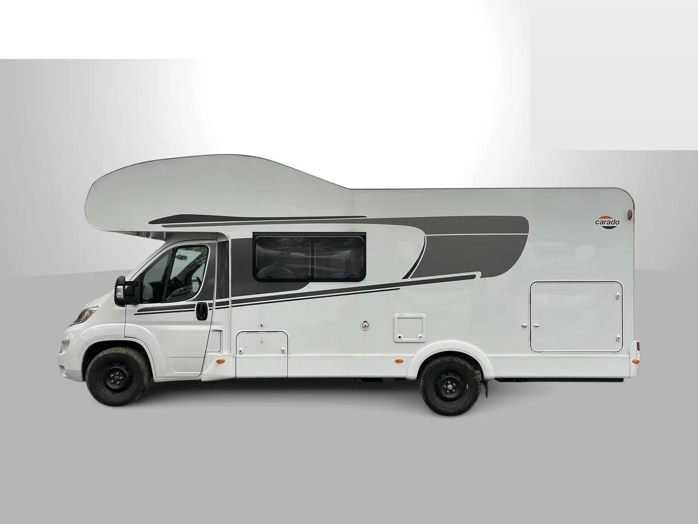

FB 1 – Marketplace, hlavní inzerát
Univerzální text pro celou sezónu. Nejdelší, nejvíc informací.
Titulek
Pronájem obytného vozu Carado A 464 (2023) – 6 míst, řidičák B, Praha
Text inzerátu
🚐 PRONÁJEM OBYTNÉHO VOZU CARADO A 464 (rok 2023) Půjčíme vám moderní alkovnový obytňák pro celou rodinu. Vůz je po servisu, pojištěný a připravený vyrazit – vy si jen sbalíte kufry. CO VÁS ČEKÁ - 6 míst k jízdě i ke spaní - Pevné lůžko vzadu – nemusíte každý večer nic stavět - Velká alkovna nad kabinou a rozkládací jídelní kout - Koupelna s oddělenou sprchou a WC - Kuchyň: vařič, dřez, prostorná lednice, hodně úložného místa - Topení Truma Combi 6 s 10l bojlerem – i na jaře a v zimě je teplo - Klimatizace Dometic FreshJet v obytné části, automatická v kabině - Solární panely a přídavná baterie – vydržíte i mimo kemp - Markýza s LED osvětlením, nosič na 4 kola, garáž s nosností 150 kg - ISOFIX pro dvě sedačky, parkovací kamera, tempomat ŘÍDÍ SE NA BĚŽNÝ ŘIDIČÁK Délka 7,24 m, manuální převodovka, stačí průkaz skupiny B. Řidič od 21 let. CENA ZA DEN (včetně DPH) - Zima (listopad, 1.–22. 12., leden): 3 090 Kč - Jaro, říjen a Vánoce: 3 790 Kč - Květen a září: 4 290 Kč - Červen: 4 590 Kč - Hlavní sezóna (červenec–srpen): 4 790 Kč V ceně je NEOMEZENÝ NÁJEZD, pojištění (povinné ručení i havarijní), dálniční známka a základní výbava. K pronájmu se účtuje jednorázový servisní poplatek 1 500 Kč. Od 11 dní sleva 10 %, od 21 dní sleva 15 %. Vratná kauce 25 000 Kč. Minimální délka pronájmu: 5 dní v hlavní sezóně, jinak 2 dny. DOBRÉ VĚDĚT - Převzetí od 14:00, vrácení do 10:00, součástí je podrobné zaškolení - Ve voze se nekouří - Psi a kočky vítáni (poplatek 1 000 Kč jednorázově) - Místo převzetí: Praha 4 – Braník Napište mi do zprávy termín, který vás zajímá, a obratem potvrdím, jestli je volný, a pošlu přesnou cenu. 📞 +420 777 97 00 95 ✉️ f.motycka@seznam.cz
Doporučené fotky a pořadí

